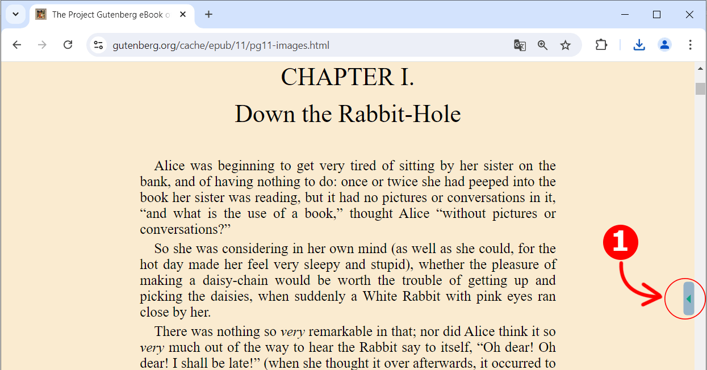

Pronounce Words Installed
Click the button (1) pinned to the right edge of your browser to activate the app.
The button's state will change from inactive to active when clicked, simultaneously activating the app.
When the app is active, you will hear the pronunciation of any selected word or phrase. For example, double-click the word 'entrepreneur' to highlight it and hear it pronounced.
By clicking the button, you will enter the main window of the application.